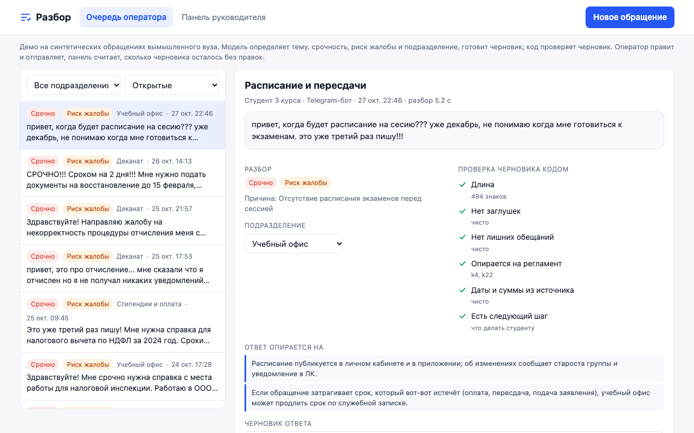
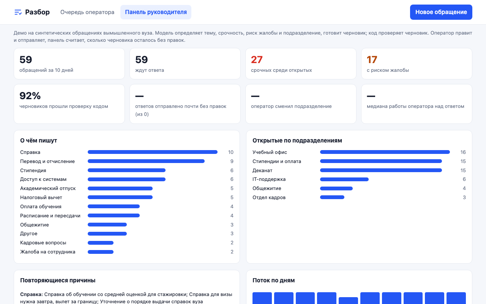

ИИ-помощник для сотрудников вуза: разбирает обращения студентов, отправляет их в нужный отдел и готовит черновик ответа.
студентов в вузах России
вузов, из них около 490 государственных
Вопросы про справки, стипендию, пересдачи и доступ к ЛК приходят вперемешку на почту, в ЛК и мессенджеры. Сотрудник сначала выясняет, чьё это обращение, пересылает его, ищет нужное правило и только потом отвечает.
Хочу сразу понимать, чьё это обращение и что ответить по правилам, чтобы закрыть его за один раз и не пересылать по кругу.
Хочу быстро получить понятный ответ с тем, что делать дальше, чтобы не писать второй раз и не пропустить срок.
| Гипотеза | У кого спрашиваем |
|---|---|
| Сотрудник тратит много времени не на ответ, а на то, чтобы понять, кому передать и где найти правило | 5 сотрудников вуза |
| Заметная часть обращений сначала попадает не в тот отдел | Сотрудники и опрос |
| Больше половины обращений типовые, ответ на них уже есть | Сотрудники |
| Студент ждёт ответа дольше 2 дней и пишет повторно | 3 студента и опрос 30+ человек |
Все обращения в одну очередь.
Тема, срочность и риск жалобы.
Сразу в нужный отдел.
Черновик по правилам вуза, его проверяет код.
Ответ всегда отправляет человек. Код проверяет черновик заранее: нет выдуманных дат и сумм, нет лишних обещаний, есть ссылка на правило и следующий шаг для студента.


| Метрика | Сейчас, демо | Цель пилота |
|---|---|---|
| Время от обращения до ответа | замер до пилота | на 30% меньше |
| Ответы, отправленные почти без правок черновика | считается при отправке | 60% |
| Обращения, которые сотрудник перенаправил в другой отдел | считается при отправке | меньше 10% |
| Черновики, прошедшие все проверки | 55 из 60 | от 90% |
Демо работает на 60 обращениях вымышленного вуза. Цели проверяем на пилоте в одном отделе.
Подписка по числу сотрудников, которые отвечают на обращения. Гипотеза: 3 000 ₽ в месяц за место, 15-20 мест на вуз. 50 вузов дают около 36 млн ₽ в год.
Рабочее демо, открытый код, сценарий интервью и опрос.
Защита персональных данных, российская модель, пилот в одном отделе вуза и замер эффекта.